R$ 1.550/mês + IPTU R$ 88/mês (subtotal R$ 1.638/mês sem seguros)
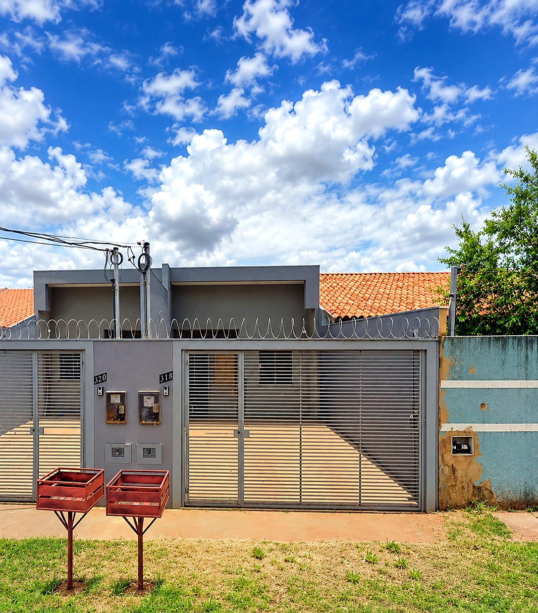
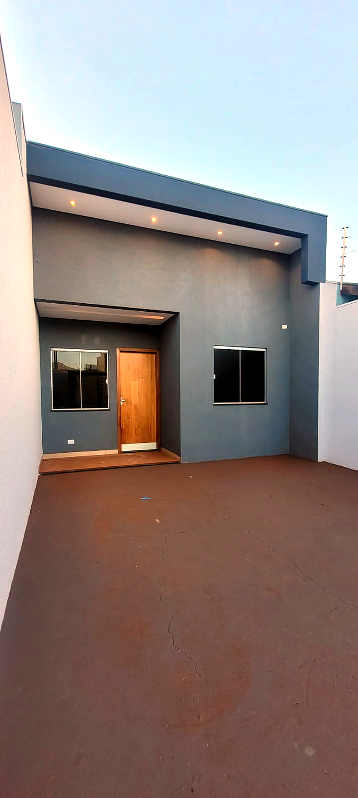
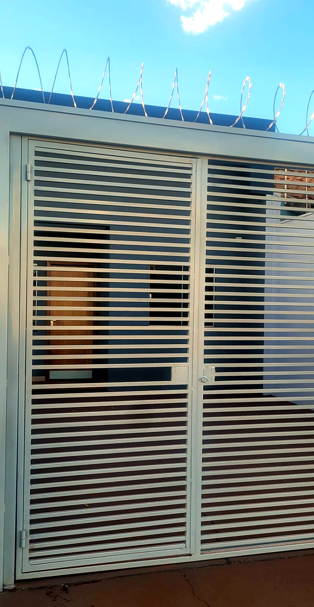
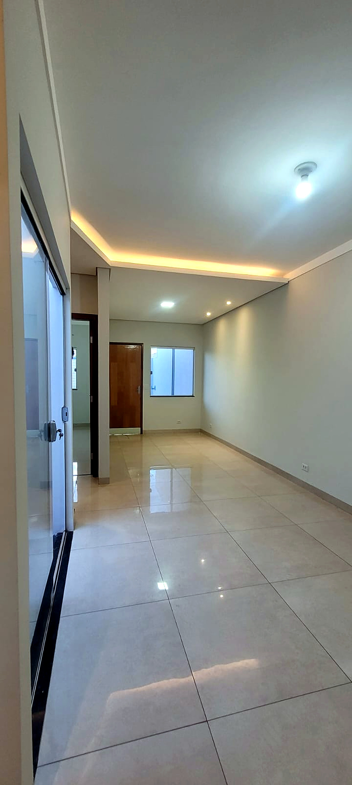
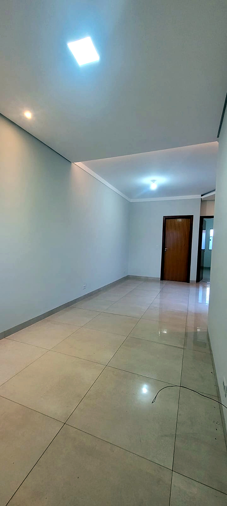
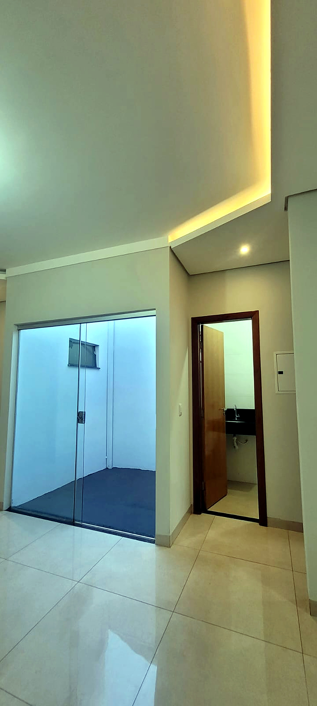
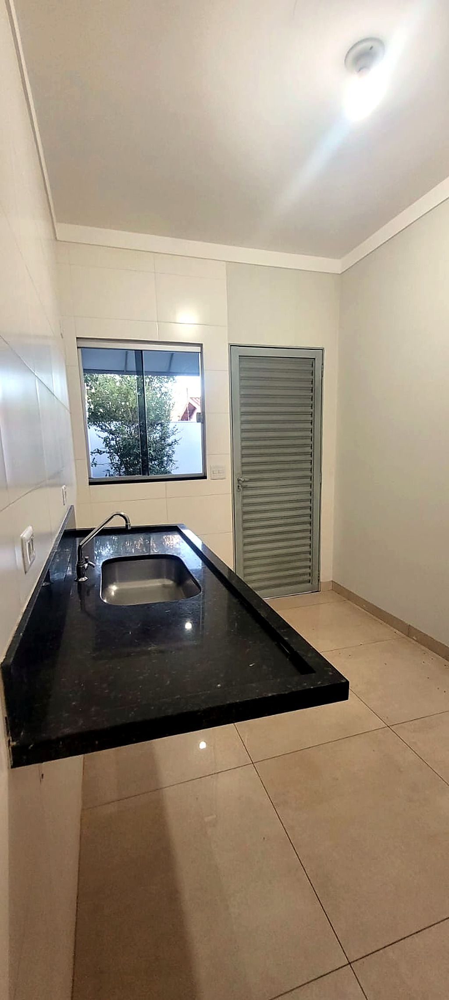
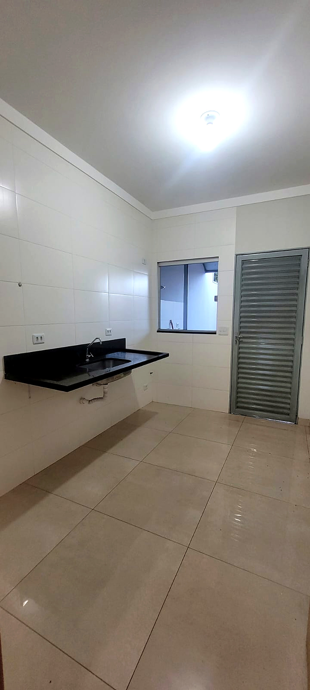
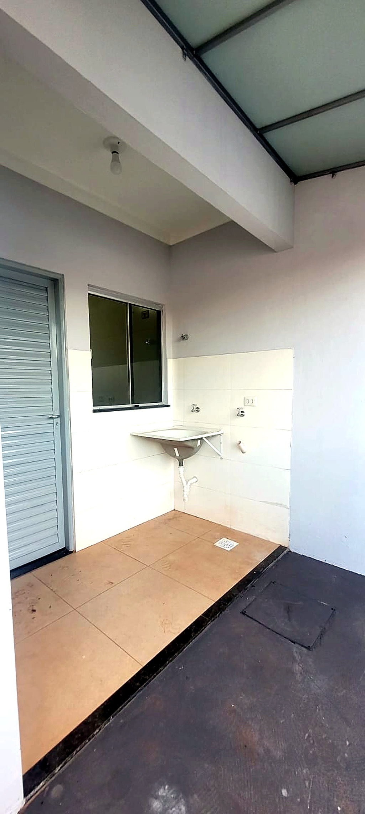
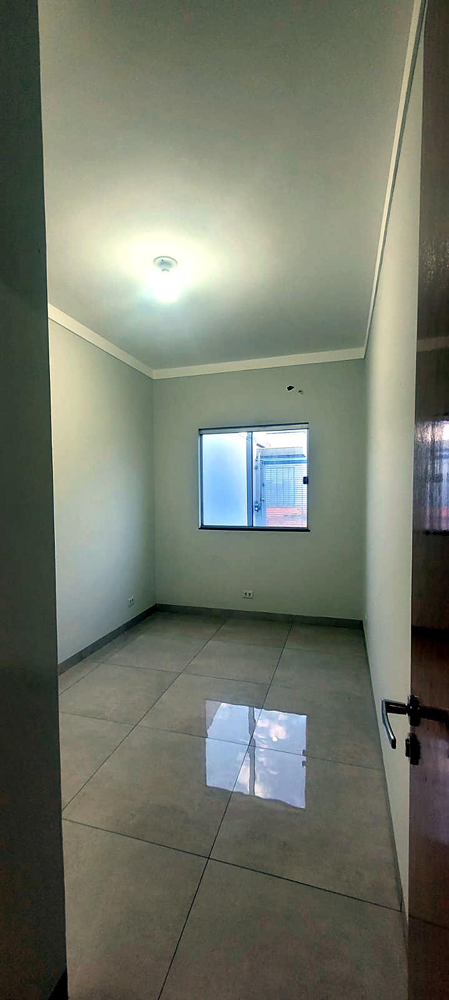
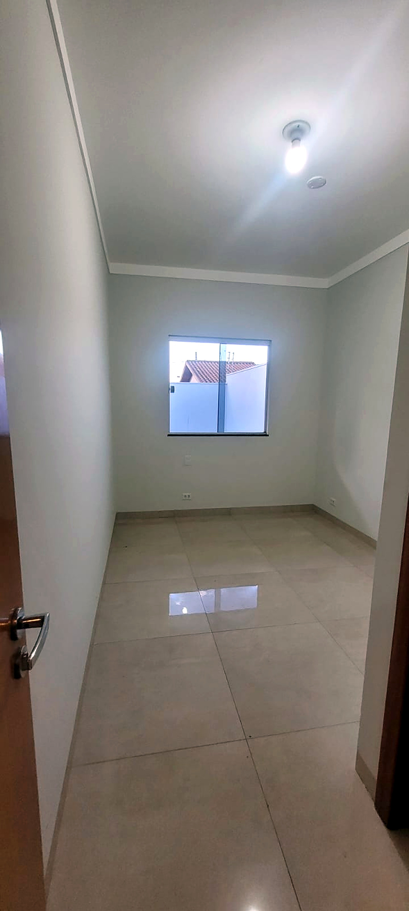
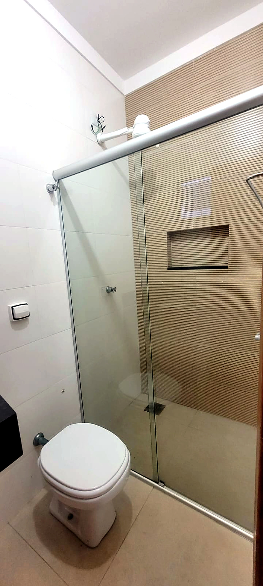
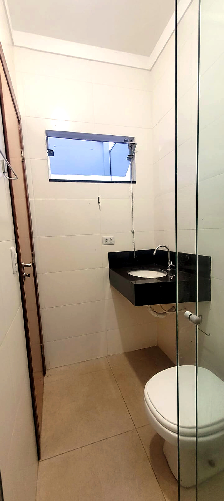
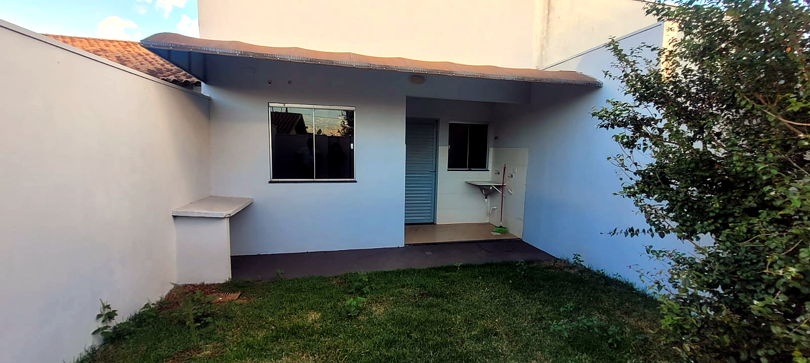
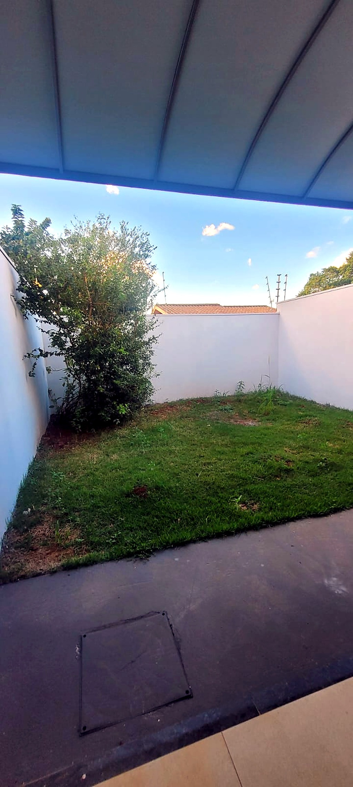
Casa para locação no Jardim das Nações, em localização estratégica próximo à UFMS, Hospital Universitário e Lago do Amor (Rua Délia Sobral Pettengill, 318 - Campo Grande/MS).
CARACTERÍSTICAS DO IMÓVEL:
- 64 m² de área construída | 125 m² de terreno
- 2 quartos, sendo 1 suíte
- Sala para 2 ambientes com porcelanato polido e sanca em LED
- Jardim de inverno em vidro temperado
- Cozinha com bancada em granito preto e cuba inox
- Banheiro social com box Blindex e nicho embutido
- Área de serviço coberta e quintal gramado nos fundos
- 2 vagas de garagem
ACABAMENTOS E SEGURANÇA:
- Portão de elevação automatizado
- Portão social eletrônico com interfone
- Concertina nos muros e iluminação em LED
- Água, energia elétrica e esgoto
LOCALIZAÇÃO:
- Próximo à UFMS, Hospital Universitário, Lago do Amor, supermercados, bancos, escolas e academia
- Rua encascalhada, em fase de asfaltamento
VALORES E CONDIÇÕES:
- Aluguel mensal: R$ 1.550,00
- IPTU mensal: R$ 88,00
- Subtotal mensal: R$ 1.638,00 (sem seguros)
- Garantia: seguro-fiança (sujeito a análise cadastral)
- Seguro incêndio anual obrigatório
Informações e agendamento de visitas:
Felipe Mendes | CRECI-MS 15588-F